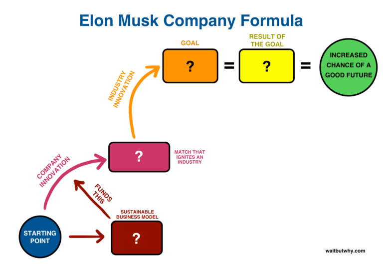
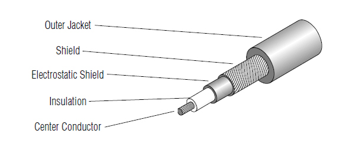
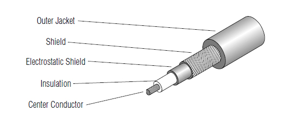
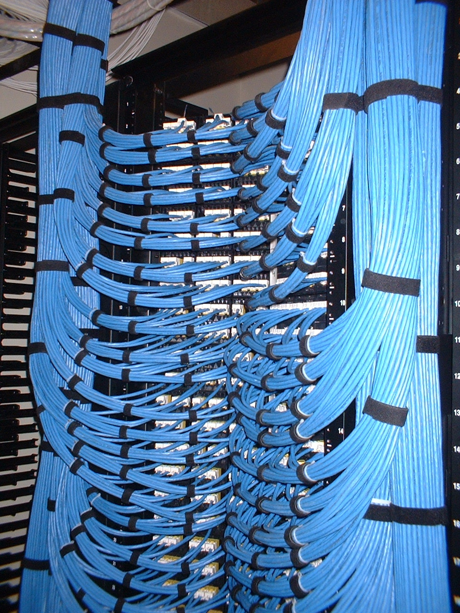
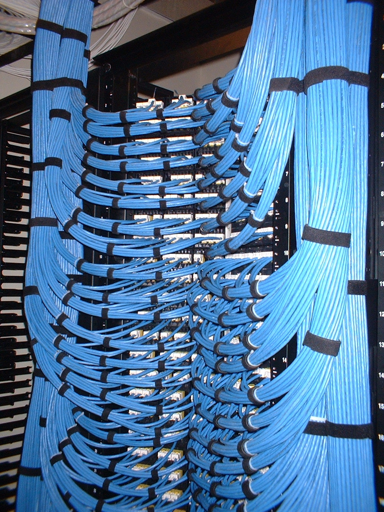
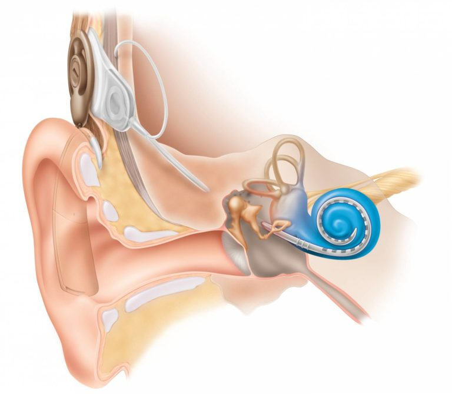
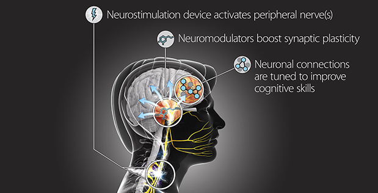
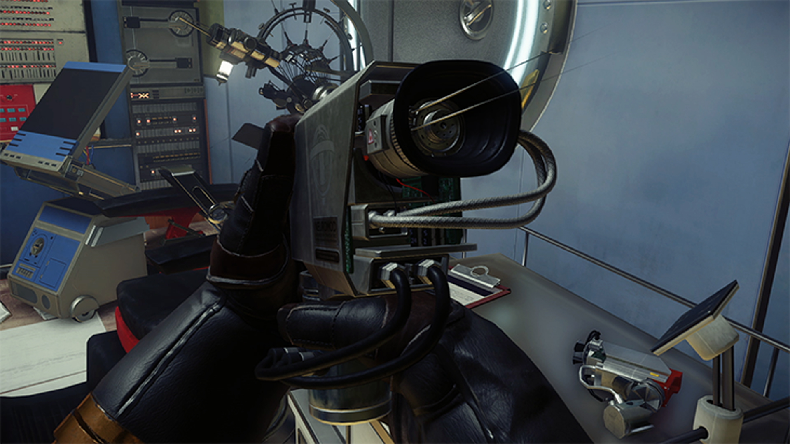
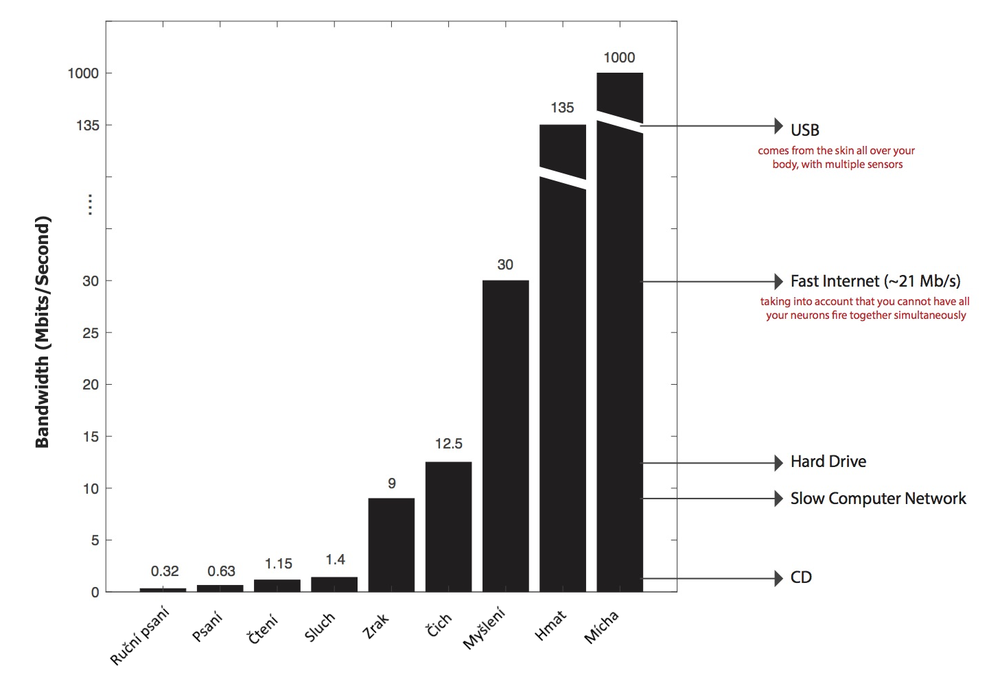
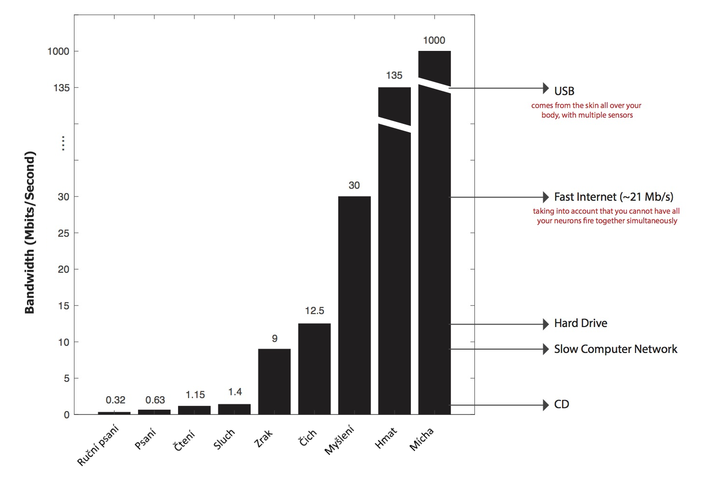

Jan @Novoj Novotný
Jeho firmy reagují na aktuální problémy lidstva jako celku.
Jeho firmy reagují na aktuální problémy lidstva jako celku.

Jeho firmy reagují na aktuální problémy lidstva jako celku.

Jeho firmy reagují na aktuální problémy lidstva jako celku.


 →
→

Přímé propojení s AI.
Přiblížení se jejím schopnostem.
Demokratizace inteligence.


Hodnota telekomunikační sítě odpovídá druhé mocnině počtu připojených (komunikujících) uživatelů. Teoretické maximum, které je snižováno bariérami - např. odlišností jazyka.

Ke konverzaci se živými lidmi se přidává možnost komunikovat s "mrtvými", i když pouze jednosměrně.
Množství znalostí předané z jedné generace na další se významně zvyšuje.
potenciálně mnohonásobně schopnějšího než jeho lidský předchůdce
analogický k vývoji lidského obra jen mnohonásobně vyšší rychlostí


|
Mozek "neplave" v mozkomíšním moku, jak jsem si myslel.
 motorické centrum |
 centrum vnímání |
 aktivita cortexu dle částí těla |
 vizualizace prostoru věnovaného různým částem těla v cortexu |
Je od 1m/s pro nestíněné synapse, 100m/s pro stíněné
 

Je možné si všimnout, že pokud se říznete do nohy, hlava vidí zranění cca 1-2s před tím, než dorazí bolest z nohy, protože bolest putuje po nervech neobalených Myelinovou vrstvou.
všechno ostatní (bílá kůra mozková) je kabeláž

 

To je také důvod záhybů na povrchu mozku - díky záhybům dosahuje příroda větší 2mm plochy myslící šedé kůry mozkové (cca 50cm2).
|  |

|

|
DARPA projekt jehož cílem je umožnit vojákům rychle se naučit potřebné znalosti - např. plynně hovořit cizím jazykem. Tj. dosáhnout něčeho čemu říkají "downloadable training".
|  Credit: DARPA |  Credit: Prey (the game) |
 →
→

 
